Exploring forward and reverse diffusion, denoising, sampling, guidance, image editing, inpainting,
and optical illusions using the DeepFloyd IF model.
Overview
In this project I work with a pretrained DeepFloyd IF diffusion model. I first implement
the forward noising process and several denoising strategies (Gaussian blur, one-step UNet
denoising, and iterative denoising). Then I use the model for sampling and classifier-free
guidance (CFG), followed by a series of editing tasks: image-to-image translation, inpainting,
text-conditional editing, visual anagrams, and hybrid images. Finally, I implement some bonus
“bells & whistles” extensions.
Throughout the page I use a fixed random seed 100, as provided in the notebook, and keep all images at
64×64 resolution from the first stage of DeepFloyd, unless otherwise noted.
Part 0 — Setup & Playing with Prompts
I set up access to DeepFloyd IF via Hugging Face, generated prompt embeddings using the
provided clusters, and experimented with several prompts related to San Francisco / Berkeley
and a few more creative phrases.
Prompts & Initial Samples
Here are a few of the initial text-to-image samples I generated while exploring different
prompts and inference steps. These are just for fun and to get a sense of the model’s behavior.
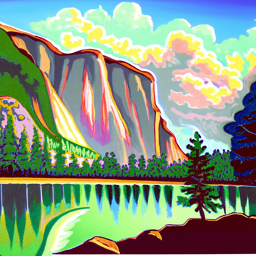
20 iterations Prompt: a lithograph of Yosemite.
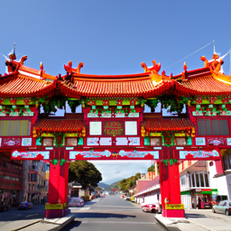
20 iterations, Prompt: a photo of San Francisco Chinatown.
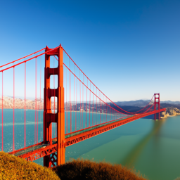
20 iterations, Prompt: a high quality picture of the Golden Gate Bridge.
Below are images at 5 iterations, they appear much more noised.
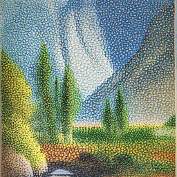
5 iterations Prompt: a lithograph of Yosemite.
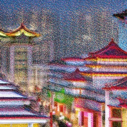
5 iterations, Prompt: a photo of San Francisco Chinatown.
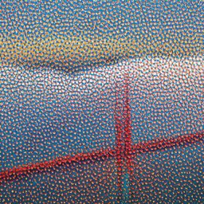
5 iterations, Prompt: a high quality picture of the Golden Gate Bridge.
1.1 Forward Process
I implemented the forward diffusion process forward(im, t), which takes a clean
Campanile image and produces noisy versions at different timesteps using the provided
alphas_cumprod schedule.
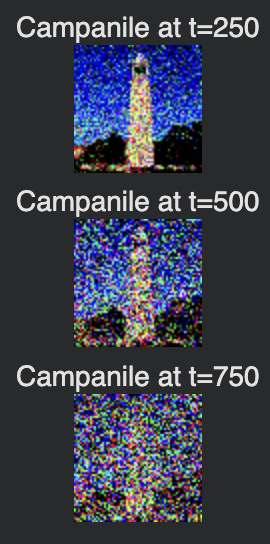
Visualization of the forward process: clean image vs progressively noisier images.
Campanile at one example noise level (e.g., t = 90).
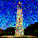
Campanile at a higher noise level (e.g., t = 240).
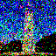
Campanile at an even higher noise level (e.g., t = 390).
1.2 Classical Denoising
I then tried classical Gaussian blur denoising on the noisy Campanile images. Even with
tuned kernel sizes and sigmas (kernel size = 5, sigma = 1), it struggles to recover fine details or clean edges.
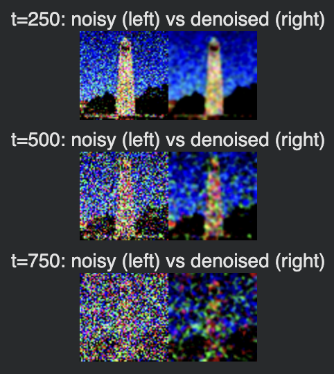
Gaussian blur denoising on noisy Campanile images at several noise levels (noisy vs denoised).
1.3 One-Step Denoising
Next, I used the pretrained DeepFloyd UNet stage_1.unet as a one-step denoiser.
Given a noisy image and timestep, the network predicts the noise, which I then invert using
the diffusion formula to estimate x₀.
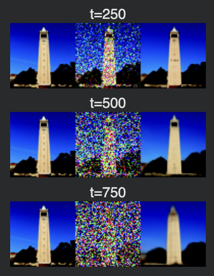
One-step denoising: original, noisy, and single-step UNet reconstruction for several timesteps.
At first, the one-step denoiser was able to do a pretty good job, but the performance deminishes as the noise get higher.
1.4 Iterative Denoising
I constructed a strided schedule strided_timesteps starting at a large timestep
and stepping down to 0, then implemented iterative_denoise using the provided
DDPM-style update rule. This repeatedly refines the image and interpolates between signal and noise.
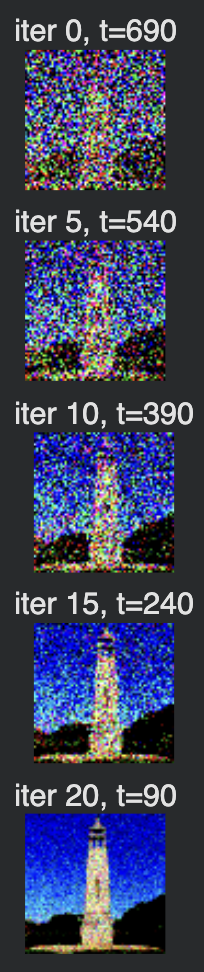
Intermediate results every few iterations, starting from a noisy Campanile.
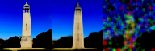
Final iteratively denoised Campanile on the left, one step denoised in the middle, and gaussian denoised image on the right.
1.5 Diffusion Model Sampling
In this section, I use the iterative_denoise function to generate images from scratch by denoising
pure Gaussian noise. I set i_start = 0 and initialize im_noisy with
torch.randn. The prompt is
"a high quality photo", and I show 5 independent samples.
Deliverables — 5 samples of "a high quality photo"
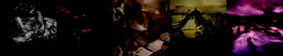
Sample 1-5 — generated from pure noise with prompt "a high quality photo".
The images mostly make little sense.
1.6 Classifier-Free Guidance (CFG)
Here I implement iterative_denoise_cfg, which extends iterative_denoise by computing
both unconditional (ε_uncond) and conditional (ε_cond) noise estimates and combining
them as:
ε_cfg = ε_uncond + s · (ε_cond − ε_uncond)
I obtain the unconditional estimate by passing an empty prompt embedding (corresponding to ""),
and the conditional estimate with the prompt "a high quality photo". I use the conditional variance
with add_variance and set scale = s (CFG scale).
Deliverables — 5 samples with CFG
Below I show 5 images generated with CFG using prompt "a high quality photo" and a CFG scale
(e.g., s = 7 as suggested in the assignment). These images are of noticeably higher quality than
the ones in 1.5.
Sample 1 — CFG-enabled generation.
1.7 Image-to-image Translation (SDEdit)
Using SDEdit, I start with a real image (the Campanile), run the forward diffusion process to a given timestep
index i_start, and then run iterative_denoise_cfg from that noisy image back to
timestep 0. The less noise I add (larger i_start), the bigger the edit. For large
i_start, the output is close to the original; for small i_start, the model is forced
to "hallucinate" more.
All runs are guided with prompt "a high quality photo". Below, I show the original Campanile,
a noisy version at some reference timestep (e.g. t=90), and the 6 SDEdit outputs for different i_start.
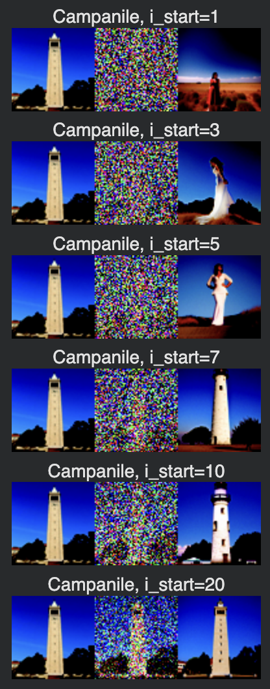
Original images on the left, noised image in the middle, and output image on the right.
Deliverables — SDEdit on 2 of my own test images
I also apply the same procedure to two of my own images and a web image, in this case it is the drawing of a panda in a black stripe, which becomes Marilyn Monroe at low i_start. The second image is a handdrawn house, which also becomes a photo. The web image is the logo of google, which becomes a dog.
Own Image #1
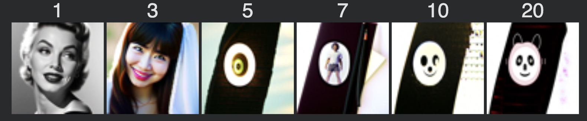
Own Image #2
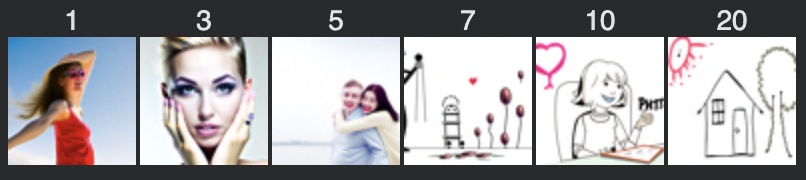
Logo of Google
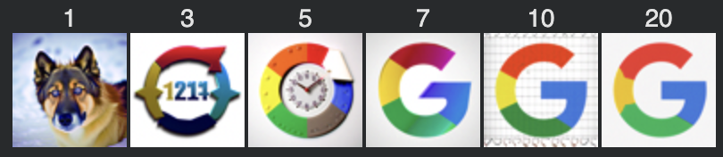
1.7.2 Inpainting
For inpainting, I implement an inpaint function that follows the RePaint idea: at each denoising
step, after computing the next estimate x_t, I replace the unmasked pixels with the corresponding
noisy version of the original image and only let the model update the masked region.
Concretely, given an original image x_0 and binary mask M (1 = region to edit),
for each timestep t I enforce:
x_t = M ⊙ x_t + (1 − M) ⊙ x_t_orig_noisy
Deliverables — Campanile inpainting
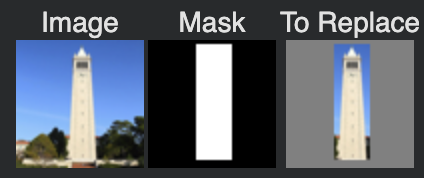
Campanile image and the masked region to inpaint.
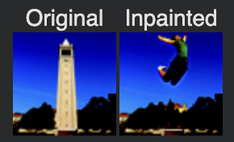
Inpainted campanile image.
Deliverables — 2 of my own images with masks
I repeat the same inpainting pipeline on two of my own images, using my own masks and show the original and inpainted result for each.
Inpainting Example #1 My self portrait
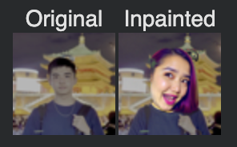
Inpainted self portrait image.
Inpainting Example #2 The Fox
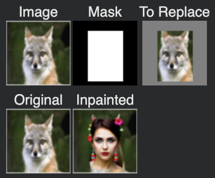
Inpainted fox image.
1.7.3 Text-Conditional Image-to-image Translation
Finally, I perform SDEdit but now with stronger, semantic prompts, turning the procedure into text-conditioned
image-to-image translation. Instead of "a high quality photo", I use prompts such as
"a lithograph of the Bay Bridge", while still starting from the Campanile and from my own images.
Deliverables — Campanile with text prompts
For the Campanile, I show edits using one text prompt "a lithograph of the Bay Bridge".
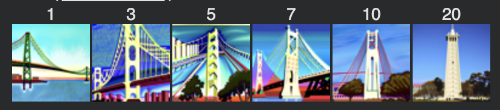Campanile, with text prompt.
Deliverables — 2 of my own images with text prompts
I apply text-guided SDEdit to two more of my own images, each with its own prompt.
Own Image #1
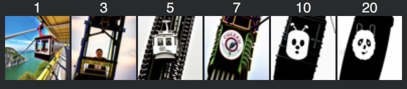My Drawn image with prompt "a photo of a cable car"
Own Image #2
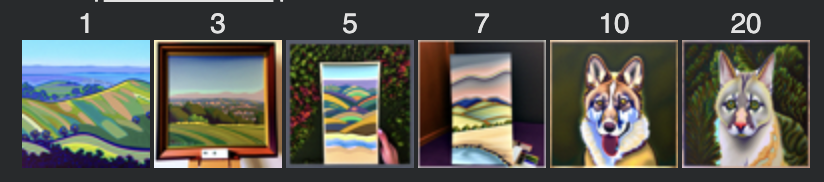Fox image with prompt "an oil painting of the Bay Area hills"
1.8 Visual Anagrams
I implement a visual_anagrams function that, at each denoising step, combines two noise estimates:
one for prompt p1 on the current image, and one for prompt p2 on the vertically flipped
image. After flipping the second noise field back and averaging, the resulting sample becomes an illusion that
looks like p1 upright and p2 when flipped upside down.
Deliverables — 2 illusion pairs
For each illusion, I show the upright and flipped versions..
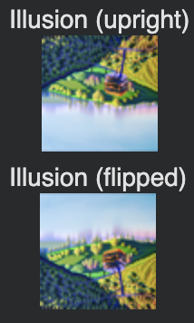
Illusion 1 — Upright "a photo of a cable car", flipped "an oil painting of the Bay Area hills"
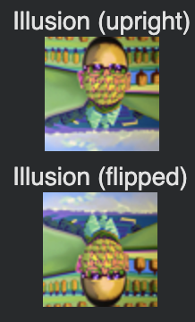
Illusion 1 — Upright "an oil painting of a Berkeley professor", flipped "an oil painting of the Bay Area hills'"
1.9 Hybrid Images
For hybrid images, I implement make_hybrids, which computes two noise estimates from different
prompts and then combines their low and high spatial frequencies:
Low frequencies from one noise estimate (via Gaussian blur with kernel size 33, σ = 2).
High frequencies from the other (original minus the blurred version).
This factorized noise estimate is then used in the reverse diffusion process to produce an image that looks like
one prompt from up close and another from far away.
Deliverables — 2 hybrid images
Hybrid image 1 — 'an oil painting of a Berkeley professor' and 'a photo of San Francisco Chinatown'.Hybrid image 2 - 'a photo of San Francisco Chinatown' and 'a lithograph of Yosemite'.
Part 2 — Bells & Whistles
In Part 2, I explore additional creative extensions of the visual anagram, as well as made a logo for the class.
More Visual Anagrams (Non-Flip Transformations)
Beyond vertical flipping, I implement two more transformations from the referenced paper to create additional visual anagrams. For each transformation, I show
an image that changes interpretation under that transform.
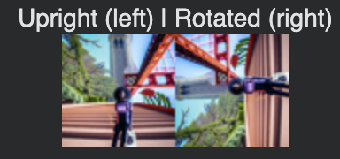
Visual anagram using transformation #1 90° rotation. Upright is a photo of a Berkeley student, rotated is a high quality picture of the Golden Gate Bridge
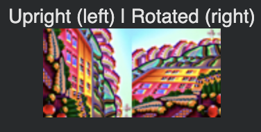
Visual anagram using transformation #1 90° rotation. Upright is a photo of chinatown, rotated is the painting of bay area hills.
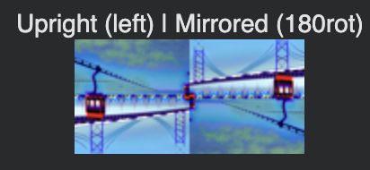
Visual anagram using transformation #2 180° rotation. Upright is a photo of tram car, rotated is the photo of gg bridge.
Course Logo
In addition, I make a course logo employing text-conditioned image-to-image translation on the UCB logo. I used the prompt "a courselogo for berkeley class cs280, stylized with triangular prism and cameras"
Original image used for text-conditioned image-to-image translation. Berkeley Golden Bear
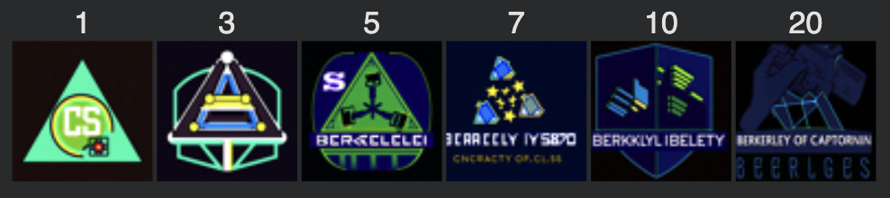
The series of logos produced using the prompt "a courselogo for berkeley class cs280, stylized with triangular prism and cameras"Final version of the logo chosen, it contains elements like a triangular prism that symbolizes light, a little camera at the bottom right that symbolizes optical systems like cameras, and a 'CS' written at the middle.